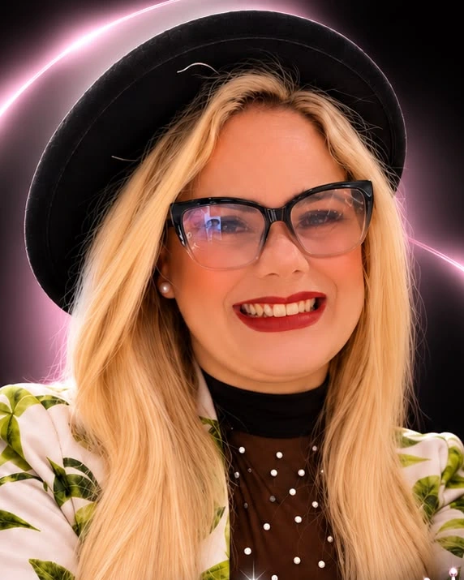

Yeilis Armas · Especialista en cabello rizado
La Reinade los Rizosde Miami
Tu cabello, tu corona.
Más de 20 años de experiencia dedicados a cuidar, cortar, definir y recuperar el cabello rizado, en un espacio privado en Hialeah.


Sobre Yeilis
Yeilis Armas, la Reina de los Rizos
Estilista profesional con más de 20 años de experiencia y embajadora internacional de la marca brasileña Phyto Activo. Su pasión es el cabello rizado, y domina por igual el cabello liso.
20+ años de experienciaEspecialista en rizosEmbajadora Phyto Activo
Leer másServicios
Un cuidado para cada textura
Cabello rizado
Recuperación del rizo, cortes especializados, definición y tratamientos personalizados.
Universo Rizado LisoCabello liso
Keratina brasileña, botox capilar, alisado, alineación y repolarización.
Ver servicios Rizos y lisoColor y mechas
Coloración, balayage y mechas para cualquier textura.
Ver servicios Rizos y lisoExtensiones y trenzas
Largo, volumen y trenzados para cualquier textura.
Ver serviciosLa especialidad de la casa
UniversoRizado
Aquí el rizo manda. Yeilis lleva más de veinte años estudiando cómo se comporta cada textura, y creó el Programa de Recuperación del Rizo para acompañarte paso a paso.

Antes y después
Transformaciones reales
Espacio para foto realDesliza para comparar
Espacio para foto realDesliza para comparar
Espacio para foto realDesliza para comparar
Pendiente: fotos reales de clientas, con su permiso
Academia de la Reina de los Rizos
Cursos, programas y consultas virtuales para aprender a cuidar tus rizos con la metodología de Yeilis, desde cualquier lugar.
Conocer la academia Catálogo de muestraTienda
Los productos que Yeilis recomienda para continuar el ritual en casa. El catálogo real se publica cuando esté listo.
Ver la tiendaTu transformación comienza aquí
Reserva tu consulta gratuita y cuéntale a Yeilis qué quieres para tu cabello.
Reservar cita La reserva en línea es una demostración